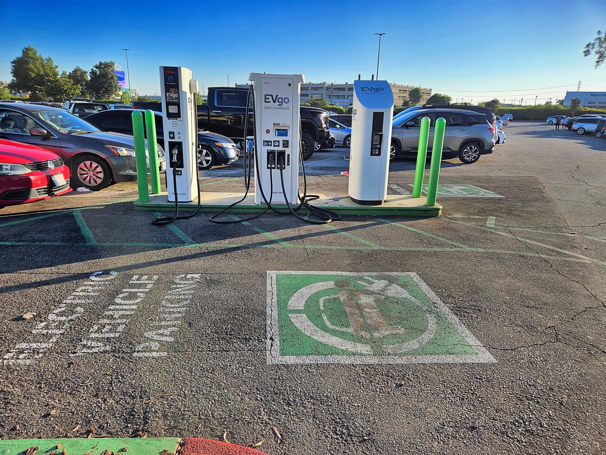

▲ 전기차 충전소. IEA는 2025년 전 세계 전기차 판매가 2,000만 대를 넘었다고 집계했다 ⓒ CarPrism
국제에너지기구(IEA)가 매년 내놓는 '글로벌 EV 아웃룩'은 전 세계 전기차 시장의 성적표 역할을 한다. 2026년판 보고서가 담은 2025년 성적표는 한 줄로 요약된다. 전 세계 신차 4대 중 1대가 전기차였다는 것이다.
1. 유럽 — CO2 규제가 만든 30%대 성장

▲ 유럽에서 충전 중인 전기차. EU의 CO2 배출 규제 강화가 판매 성장의 주된 배경으로 꼽힌다 ⓒ CarPrism
유럽은 2025년 전기차 판매가 전년 대비 30% 이상 늘며 조사 대상 주요 시장 중 가장 가파른 성장률을 기록했다. 판매 비중도 28%까지 올라왔다. IEA는 이를 유럽연합의 승용차 CO2 배출 기준이 한층 엄격해진 영향으로 설명한다. 완성차 업체 입장에서는 규제를 맞추기 위해서라도 전기차 판매 비중을 늘릴 수밖에 없는 구조다.
2. 중국 — 63%의 압도적 비중, 다만 둔화 신호도

▲ 중국의 초급속 충전소. 중국은 전 세계 전기차 판매의 63%를 차지하는 최대 시장이다 ⓒ CarPrism
중국은 여전히 전 세계 전기차 판매의 63%를 차지하는 압도적 1위 시장이다. 다만 2026년 1분기에는 보조금 성격의 트레이드인(내연차 폐차 후 전기차 구매 지원) 프로그램이 일시 중단되면서 성장세가 주춤했다. 그럼에도 연간 기준으로는 여전히 세계 시장을 견인하는 축이다.
3. 미국 — 세액공제가 끝나자 꺾인 그래프

▲ 미국 EVgo 충전소. 연방 세액공제 폐지 이후 미국 전기차 판매는 연말 들어 뚜렷하게 둔화됐다 ⓒ CarPrism
미국은 사정이 다르다. 전기차 판매 비중이 10% 안팎에서 좀처럼 오르지 못했고, 특히 연방 세액공제(IRA 보조금) 폐지 시점과 맞물려 연말 판매가 눈에 띄게 감소했다. 유럽·중국과 달리 정책적 뒷받침이 약해지자 곧바로 수요가 반응한 셈이다.
4. 2026년 전망 — 28%까지 갈까
IEA는 2026년 전 세계 전기차 판매가 2,300만 대까지 늘어 비중 28%에 이를 것으로 내다봤다. BloombergNEF 역시 비슷하게 27% 안팎을 전망한다. 다만 2026년 1분기 실적은 중국·미국 수요 약화 여파로 전년 대비 8% 감소한 390만 대에 그쳤다는 점에서, 연간 목표 달성 여부는 하반기 반등에 달려 있다.
5. 정리
체크포인트
- 2025년 전 세계 전기차 판매는 20% 성장, 2,000만 대를 넘었다.
- 유럽은 30% 이상 성장했고, 중국은 63%의 점유율로 여전히 최대 시장이다.
- 미국은 세액공제 폐지 이후 성장이 정체됐다.
- 2026년 목표치는 2,300만 대(비중 28%)지만 1분기는 오히려 감소했다.